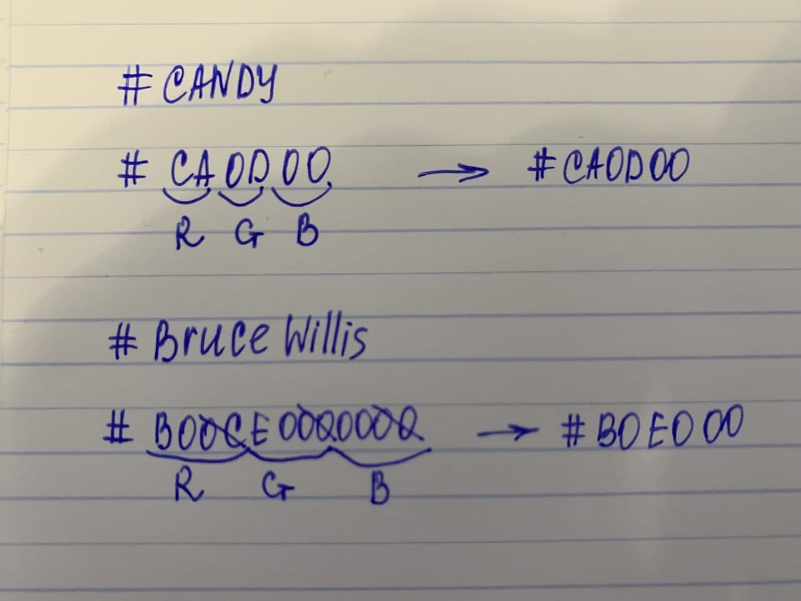

Весь секрет в том, что символы после знака # преобразовываются в шестнадцатеричную систему. Если такой символ есть — он остается, если такового нет — на его месте ставится 0. Затем все символы делятся на 3 группы, т.е. red green blue. Если получается, что символов не хватает, тогда в конец ставится нужное количество нулей. И на последок мы в каждой группе оставляем по два символа. Работает)
Цвет #BruceWillis: САЛАТОВЫЙ
Цвет #B0E000: ТОЖЕ САЛАТОВЫЙ
Цвет #CANDY: КРАСНЫЙ
Цвет #CA0D00: ТОЖЕ КРАСНЫЙ
Мои расчеты:
